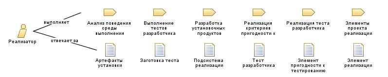

| Роль: Реализатор |
 |
|
Взаимосвязи
 |
||
| Изменяет |
|
|
|---|---|---|
Основное описание
|
Задача исполнителя роли реализатора состоит в разработке программных компонентов и проверке их функциональности после интеграции в подсистемы, в соответствии с требованиями к адаптируемости проекта. Если требуется создать компоненты тестирования, например, драйверы или заготовки, реализатор должен создать эти компоненты и соответствующие системы, после чего проверить их функциональность. ЛитератураСм. Code Complete - A Practical Handbook of Software Construction [MCO93]. |
Персонал
Дополнительные сведения
| Концепции | |
|---|---|
| Информационные бюллетени |
© Copyright IBM Corp. 1987, 2006. Все права защищены.. |